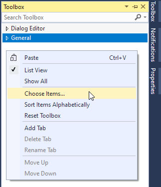

LDisplay 显示控件基于 Win32 GDI 接口开发，用于显示和操作可绘制的 LPW 对象，如图像、区域、几何图形等，可无缝嵌入到 OEM 应用及设备平台，帮助机器视觉解决方案的快速开发。
- 同时显示大尺寸图像、海量的几何图形和算法结果
- 支持鼠标拖拽、缩放或使用滚动条改变显示区域
- 支持鼠标操作编辑 Region 对象
- 支持适应尺寸到当前窗口、某一个显示图形或指定区域
- 支持保存当前图像和显示截图到文件
- 支持自定义辅助线显示
- 支持显示鼠标位置及对应像素值
用户也可以选择另一种更灵活的显示调用方式，使用 LPW 类型自带的绘制函数

如何添加显示控件到工程
模块: lpvDisplay.dll
注意: 请确保所需 LVP 算法库均已注册并授权。
方法 1: 使用工具箱
步骤 1 - 在所需配置的工程的资源界面，右键点击工具箱窗口的任意位置，在菜单中点击 选择项 。

步骤 2 - 选择工具箱项窗口列出系统中已注册的所有可添加到工具箱的组件，其中打勾项为已经添加的组件。
步骤 3 (A) - 选择 COM组件 页面，在列表中勾选 LDispaly class 组件，然后点击 确定 。可以在工具箱中找到刚加入的 LDisplay 控件。

步骤 3 (B) - 或者，也可以通过浏览到 lpvDisplay.dll 文件所在位置的方式，添加 LDisplay 控件。
步骤 4 - 之后，您就可以在工具箱中通过双击或拖拽LDisplay控件，将其添加到 MFC 或 .NET 窗口中。相关的引用配置将被自动添加到工程文件。

方法 2: 使用类向导（MFC）
步骤 1 - 在所需配置的工程的解决方案页面，右键点击该项目，在菜单中选择 类向导 。

步骤 2 - 选择并打开 从 ActiveX 控件添加类向导 窗口。

步骤 3 - 选择从 文件 来源添加类，浏览并打开 lpvDisplay.dll 文件所在位置.
步骤 4 - 选择 ILDisplay 接口并单击添加，生成相应的封装类。

步骤 5 - 点击 完成**然后**确定 。工程中将新增自动生成的 CLDisplay.h 和 CLDisplay.cpp 文件。
步骤 6 - 之后，您就可以在工程中添加相关代码，使用该显示控件。更多使用样例，请查阅 demo/mfcdemo/MFCDisplay 样例工程。
或者，您也可以直接使用我们在发布版本中附带的封装类。.h和.cpp位于 demo/mfcdemo/Wrappers/LPVDisplay 文件加中，您需要引用 LPVDisplay.h ，并将 CLDisplay.cpp 加到工程中。
方法 3: 使用 #import 指令（C++）
该指令用于导入类型库中的类、接口等信息。更多细节，请参考 https://docs.microsoft.com/zh-cn/cpp/preprocessor/hash-import-directive-cpp 。
在代码中添加以下导入命令：
#import "libid:5b289f4f-ebc9-4a41-bd94-07f4a4e4e5f6"
-or-
#import "Y:\\runner\\x86\\lpvDisplay.dll"
-or-
#import "progid:LPV.LDisplay"
方法 4: 添加引用（C#）
您可以按照使用其他 LPW 模块的方式，添加 LPVDisplay 模块到 C# 工程：
- 右键工程的 Reference 项，点击 Add Reference
- 选择 COM 页面，找到并添加 LPVDisplayLib，勾选后点击 OK 。
- 在代码文件中添加
using LPVDisplayLib;
在代码中创建 LDisplay 控件
示例代码（在UI程序中使用）
C++
class CDisplayDialog : public CDialog
{
public:
explicit CDisplayDialog(UINT nIDTemplate, CWnd* pParentWnd = NULL) :
CDialog(nIDTemplate, pParentWnd) {}
CLDisplay displayCtrl;
virtual BOOL OnInitDialog()
{
CDialog::OnInitDialog();
RECT r;
GetClientRect(&r);
displayCtrl.Create(L"Display Control",
WS_CHILD | WS_VISIBLE,
r, this, 0);
return TRUE;
}
};
void CMFCDisplayDlg::OnBnClickedBtnDisplayDlg()
{
CDisplayDialog displayDlg(IDD_DISPLAY_DLG, this);
displayDlg.DoModal();
}
C#
namespace CSharpDisplay
{
public partial class CSharpDisplay : Form
{
private void btnDisplayDlg_Click(object sender, EventArgs e)
{
Form prompt = new Form();
AxLDisplay displayCtrlInDlg = new AxLDisplay();
displayCtrlInDlg.Dock = System.Windows.Forms.DockStyle.Fill;
prompt.Controls.Add(displayCtrlInDlg);
prompt.Width = 600;
prompt.Height = 400;
prompt.Text = "Display Dialog";
prompt.ShowDialog();
}
示例代码（在控制台程序中使用）
C++
ILImageArithmPtr arithm(__uuidof(LImageArithm));
ILImagePtr result_img(__uuidof(LImage));
arithm->Blend(img_list, LPVAggregation::LPVAggAvg, result_img);
ILDisplayPtr displayCtrl(__uuidof(LDisplay));
displayCtrl->SetImage(result_img);
displayCtrl->ShowDialog(L"blend avg result", 0, 0, 0, 0);
C#
LImageArithm arithm = new LImageArithm();
LImage result_img = new LImage();
LDisplay displayCtrl = new LDisplay();
displayCtrl.SetImage(result_img);
displayCtrl.ShowDialog("blend avg result");
LPVAggregation
数值统计的方式
Definition: LPVCore.idl:512